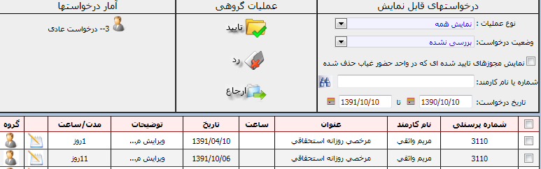
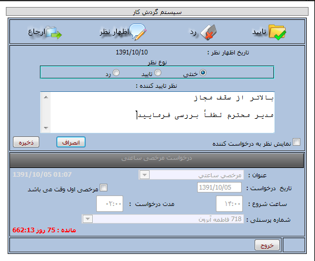
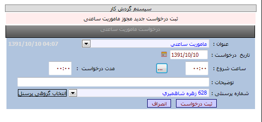
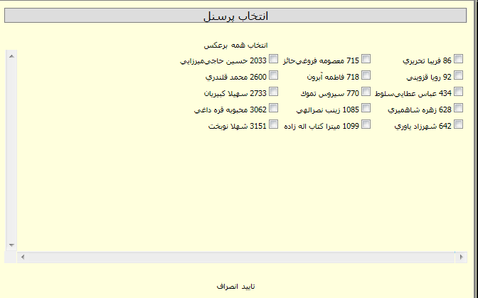

|
کارتابل مدیر
|
 
|
|
کارتابل مدیر
|
|
کارتابل مدیر
پرسنل جانشین -تفویض اختیار-کارتابل خاص و مدیران بخشها وقتی با کاربری خود وارد سیستم می شوند موارد ذیل را مشاهده خواهند کرد.
درصورتیکه مدیر هر بخش با کاربری خود وارد برنامه شود و گزینه کارتابل را انتخاب نماید می تواند درخواستهای پرسنل زیر بخش خود را مشاهده نماید (عدد کنار کارتابل که در پرانتز مشاهده می گردد تعداد درخواستهای موجود در کارتابل مدیر می باشد)
امکانات
اگر در بخشی از بازه زمانی درخواست شده مجوز روزانه دیگری صادرشده پیغام اخطار داده شود.
روش بررسی یک درخواست :
در کارتابل مدیر هربخش لیست درخواستها مشاهده می گردد که فرد درخواست کننده کیست/عنوان درخواست(مرخصی ماموریت اضافه کار ورود وخروج فراموش شده)/ساعت یا تاریخ درخواست/توضیحات درخواست کننده دررابطه با درخواست/تعداد روزهای درخواست برای مجوزهای روزانه/ودر آخر قسمت نظر مدیر و گروه می باشد که با توجه به این اطلاعات می توانند تصمیم گیری نماید که:
درخواست مورد تایید است: که با انتخاب درخواست مورد نظر و زدن کلید تایید ،درخواست تایید شده ودر برنامه حضور وغیاب ثبت می گردد.
رد درخواست:در صورتیکه درخواستی مورد تایید نباشد، با انتخاب درخواست مورد نظر و زدن کلید رد ،درخواست رد شده ودر برنامه حضور وغیاب ثبت نمی گردد. (دقت فرمایید که در صورتیکه فرد درخواست کننده وضعیت درخواست خود را بررسی کند در لیست درخواستهای رد شده قابل مشاهده می باشد )
ارجاع درخواست:ارجاع درخواست وقتی مورد استفاده قرار می گیرد که مدیر مربوطه درخواست را مشاهده نموده و پس از بررسی به این نتیجه می رسد که تایید یا رد درخواست در حیطه اختیارات او نیست و باید به مدیر بالاتر (مدیر بالایی با حدود اختیارات بالاتر ) ارجاع داده شود.
برای ارجاع فردی یا بصورت گروهی، درخواست یا درخواستهای مورد نظر را انتخاب نموده و با زدن کلید ارجاع کلیه درخواستها به کارتابل مدیر بالایی انتقال می یابد.
توضیح گروه:
در صورتی که در ستون گروه، چنین آیکونی را مشاهده نمودید نشان دهنده نوع درخواست ارسال شده از پرسنل زیر بخش آن مدیر می باشد.
در صورتی که در ستون گروه، چنین آیکونی را مشاهده نمودید نشان دهنده نوع درخواست ارسال شده مربوط به پرسنل زیر بخش جانشین مدیر یا کارتابل خاص می باشد .
در صورتی که در ستون گروه ،چنین آیکونی را مشاهده نمودید نشان دهنده نوع درخواست ارسال شده از کارتابل مدیری است که براساس چارت سازمانی تعریف شده در برنامه ، ردیف پاینی مدیر اصلی است که درخواست را ارجاع به بالا زده تا مدیری با سطح دسترسی بالاتر امکان تایید داشته باشد.
برای انتخاب گروهی: کافی است گزینه بالایی در ردیف پرسنلی را تیک زده ونوع عملیات گروهی را انتخاب نمایید تا همه درخواست ها تایید گردند /رد گردند/ارجاع داده شوند.
تاریخ درخواست ..... تا ..... :با انتخاب تاریخ در این قسمت درخواستها را براساس تاریخ انتخابی مشاهده می نمایید.
کلید وضعیت درخواست : بوسیله این کلید می توانید درخواستهای ارسال شده /رد شده /تایید شده /بررسی نشده /تاریخ گذشته /ارجاع داده شده را انتخاب نمایید.
آمار درخواستها:نشان دهنده تعداد درخواست قابل مشاهده در لیست درخواستهای پرسنل می باشد.
نمایش مجوزهای تایید شده اسی که در واحد حضوروغیاب حذف شده: با زدن این گزینه می توانید درخواستهایی که تایید شده و در برنامه حضور وغیاب حذف گشته را مشاهده نمایید.
نکته : درصورتیکه بخواهید با اعلام نظر تایید یا رد ویا ارجاع بفرمایید از کلید اظهار نظر که برای هر درخواست قابل مشاهده است استفاده نمایید. نمودار(3 )
کلید درخواستهای شخصی : برای مشاهده درخواستهای شخصی مدیر، کلید درخواستهای شخصی را انتخاب نمایید.
کلید درخواستهای از طرف: برای مشاهده درخواستهای سایر پرسنل ، کلید درخواستهای از طرف را انتخاب نمایید.

نمودار(1)

نمودار(2)

نمودار(3)
نکته:مدیران می توانند علاوه براینکه برای خودشان درخواست ثبت نمایند برای پرسنل زیر بخش خود نیز درخواست ثبت نمایند ویا درخواست را بصورت گروهی ثبت نمایند. (بازدن کلید انتخاب گروهی پرسنل می توانید درخواست را بصورت گروهی برای تک تک پرسنل یک بخش با تیک زدن نام هر پرسنل ثبت نمایید) نمودار(4) ونمودار(5)

نمودار(4)

نمودار(5)